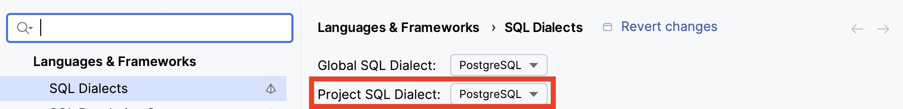
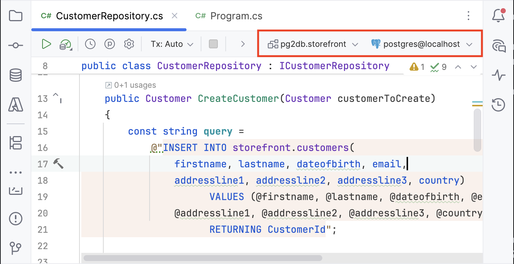
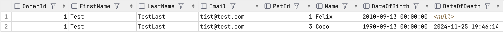
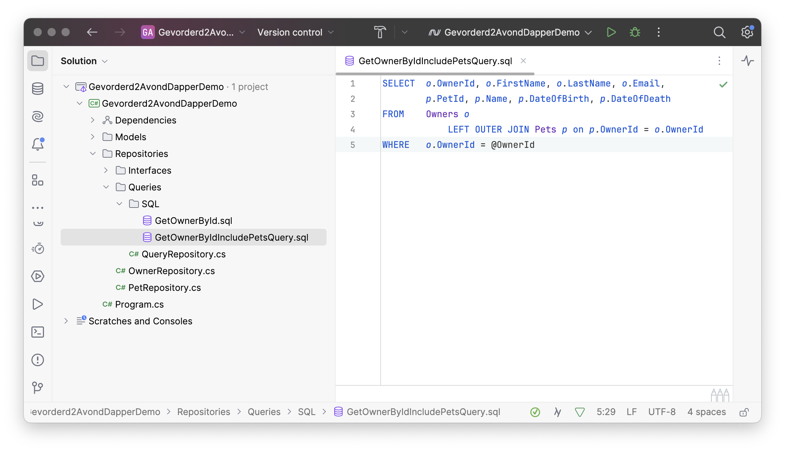

Dapper
| Bepaalde code snippets in deze tekst stammen uit een ouder voorbeeld met MySQL. Ze worden tijdens/na de les vervangen door Storefront voorbeelden met PostgreSQL. |
Wat is Dapper?
Dapper is een minimalistische ORM (Object-Relational Mapping) tool. Je schrijft zelf alle SQL DDL én DML, maar Dapper zal het mappen tussen objecten en SQL result sets deels automatiseren.
De Dapper logica wordt aangeleverd als een set extension methods op een ADO.NET Connection. Concreet zal je een pak minder ADO.NET code schrijven dan voorheen.
Opzetten
Voeg de PostgreSQL Connector en Dapper packages toe aan jouw project.
dotnet add package Npgsql
dotnet add package DapperRepositories
Voeg een nieuwe implementatie toe voor de Customers repository interface.
Server=localhost;Port=5432;Userid=admin;Password=secret;Database=pg2db
Bewaar de connectionstring in appsettings.(Development).json en lees dit gemakkelijk uit met IConfiguration via nuget Microsoft.Extensions.Options.
|
Rider SQL Tip
Vertel Rider in de settings dat je PostgreSQL gebruikt.

Voeg je database connectie toe in Rider. Je kan deze ook binden aan een C# editor tab. Op dat moment zal Rider de PGSQL syntax binnen in C# strings valideren én zelfs parsen tegen je geselecteerde connectie en schema!

Deze nauwe integratie voorkomt een boel SQL runtime errors 🙂
Code Snippets
De flow van een Dapper repo methode is
-
definieer query
-
maak connection aan
-
voer query uit met Dapper extension method
-
(verwerk resultaat)
-
return resultaat
Create
public Customer CreateCustomer(Customer customerToCreate)
{
const string query =
@"INSERT INTO storefront.customers(
firstname, lastname, dateofbirth, email,
addressline1, addressline2, addressline3, country)
VALUES (@firstname, @lastname, @dateofbirth, @email,
@addressline1, @addressline2, @addressline3, @country)
RETURNING CustomerId"; (1)
using var connection = new NpgsqlConnection(connectionstring);
var id = connection.ExecuteScalar<int>(query, customerToCreate); (2)
return GetCustomerById(id) ?? throw new Exception( (3)
$"Cust {customerToCreate.FirstName} could not be created"
);
}| 1 | insert én ontvangen Id dat toegewezen werd door database. |
| 2 | We verwachten een int - het id - terug. |
| 3 | Steunen op implementatie GetById() om volledig object te returnen. |
GetById
public Customer? GetCustomerById(int id)
{
const string query =
@"SELECT * FROM Storefront.Customers WHERE CustomerId = @Id";
using var connection = new NpgsqlConnection(connectionstring);
var result = connection.QuerySingleOrDefault<Customer>((1)
query, new {Id = id});
return result;
}| 1 | Hier wordt bepaald naar welk type (Owner) Dapper zal mappen. |
Kies zorgvuldig of je QuerySingle() of QuerySingleOrDefault() wil gebruiken. De standaard variant zal een exception gooien wanneer het gezochte record niet bestaat. De …OrDefault variant zal in dat geval een default waarde teruggeven. De default default is null.
GetAll
public IEnumerable<Customer> GetAllCustomers()
{
const string query =
@"SELECT * FROM storefront.Customers";
using var connection = new NpgsqlConnection(connectionstring);
var result = connection.Query<Customer>(query);
return result;
}Delete
public void DeleteCustomer(int id)
{
const string query =
@"DELETE FROM storefront.Customers
WHERE CustomerId = @CustomerId";
using var connection = new NpgsqlConnection(connectionstring);
connection.Execute(query, new { CustomerId = id });
}Update
public void UpdateCustomer(Customer customerToUpdate)
{
const string query =
@"UPDATE storefront.Customers
SET firstname = @firstname,
lastname = @lastname,
dateofbirth = @dateofbirth,
email = @email,
addressline1 = @addressline1,
addressline2 = @addressline2,
addressline3 = @addressline3,
country = @country
WHERE CustomerId = @CustomerId";
using var connection = new NpgsqlConnection(connectionstring);
connection.Execute(query, customerToUpdate); (1)
}| 1 | Het aantal aangepaste rijen evalueren zou niet gek zijn… |
Eén-op-één
| TODO Voorbeeld Storefront: 1 Bestelling + 1 Klant |
public Pet GetByIdIncludeOwner(int id)
{
const string query = @"SELECT o.OwnerId, o.FirstName, o.LastName, o.Email,
p.PetId, p.Name, p.DateOfBirth, p.DateOfDeath
FROM Pets p
INNER JOIN Owners o on p.OwnerId = o.OwnerId (1)
WHERE p.PetId = @PetId";
using var connection = new MySqlConnection(ConnectionString);
var result = connection.Query<Owner, Pet, Pet>((2)
sql: query,
map: (owner, pet) => (3)
{
pet.Owner = owner;
return pet;
},
param: new { PetId = id},
splitOn: "PetId"); (4)
return result.First(); (5)
}| 1 | JOIN de Owner tabel. |
| 2 | De resultset van mijn SQL bevat een Owner en daarnaast een Pet en ik wil een Pet als return type van de query. |
| 3 | Gegeven het gemapte Owner en Pet object, welke logica moet uitgevoerd worden om het te mappen naar de Pet reponse type? |
| 4 | Alle kolommen links van PetId behoren tot de Owner. Alles vanaf PetId behoort tot de Pet. |
| 5 | De resultset heeft in theorie wel meerdere rijen, maar ik weet dat een Pet record maar één Owner zal joinen, dus geef mij gewoon de eerste. |
Eén-op-veel
| TODO Voorbeeld Storefront: 1 Bestelling + N Producten |
Laten we de Owner eens uitlezen met alle Pets ingevuld. Daarnet had elke Pet maar één Owner. Nu ligt het lastiger: een Owner heeft een lijst van Pets.
SELECT o.OwnerId, o.FirstName, o.LastName, o.Email,
p.PetId, p.Name, p.DateOfBirth, p.DateOfDeath
FROM Owners o
LEFT OUTER JOIN Pets p on p.OwnerId = o.OwnerId
WHERE o.OwnerId = @OwnerId
De SQL result set zal dus wel degelijk meerdere records kunnen teruggeven waar we effectief rekening moeten mee houden.
public Owner GetByIdIncludePets(int id)
{
using var connection = new MySqlConnection(ConnectionString);
var result = connection.Query<Owner, Pet, Owner>((1)
sql: "<de query van hierboven>",
map: (owner, pet) => (2)
{
owner.Pets.Add(pet);
return owner;
},
param: new { OwnerId = id},
splitOn: "PetId"); (3)
return MapToManyPets(result); (4)
}| 1 | De resultset van mijn SQL bevat een Owner en daarnaast een Pet en ik wil een Owner als return type van de query. |
| 2 | Gegeven het gemapte Owner en Pet object, welke logica moet uitgevoerd worden om het te mappen naar de Owner reponse type? |
| 3 | Alle kolommen links van PetId behoren tot de Owner. Alles vanaf PetId behoort tot de Pet. |
| 4 | De resultset bevat wel alle data, maar we gaan logica nodig hebben om dat te herstructureren naar één Owner met veel Pets ipv een lijst van Owners met telkens één Pet. Laten we dat in een aparte methode doen. |
private Owner MapToManyPets(IEnumerable<Owner> ownerRecords)
{
var singleOwner = ownerRecords.First();(1)
singleOwner.Pets = ownerRecords.Select(or => (2)
{
var pet = or.Pets.First();
pet.Owner = singleOwner; (3)
return pet;
}).ToList();
return singleOwner; (4)
}| 1 | De eerst Owner in de lijst wordt dé Owner. |
| 2 | Bouw een lijst die alle Pets bevat. |
| 3 | Laat elk van die Pets naar dé Owner verwijzen. |
| 4 | Return dé Owner met alle Pets. |
Dependency Injection
...
builder.Services.AddScoped<ICustomerService, CustomerService>();
builder.Services.AddScoped<ICustomerRepository, CustomerRepository>();
...TODO
Queries Out-Of-Line Bewaren
Tot op heden staan de SQL queries inline in de C# code. Dat is niet inherent verkeerd, maar het kan ook anders. We kunnen elke query in een sql file bewaren.

In de "File Properties" van het sql bestand, moet je "Copy If Newer" selecteren opdat het bestand meegenomen zou worden naar het output directory van de build operatie. Zoals altijd is er niets magisch aan het klikken in een IDE, dit schrijft gewoon een extra lijntje config in de csproj file.
<None Update="Repositories\Queries\SQL\GetOwnerByIdIncludePetsQuery.sql">
<CopyToOutputDirectory>PreserveNewest</CopyToOutputDirectory>
</None>We maken een repository via dewelke de queries toegankelijk gemaakt worden.
We zorgen ervoor dat een file maar één keer gelezen wordt zolang het repository leeft. Doe je dat niet, dan zal het systeem elke keer je een query wil uitvoeren eerst een file moeten lezen. Dat zou waanzinnig inefficient zijn.
public class QueryRepository
{
private string? _getOwnerByIdIncludePetsQuery;
private string? _getOwnerById;
private const string QueryRoot = "Repositories/Queries/SQL/";
public string GetOwnerByIdIncludePetsQuery =>
_getOwnerByIdIncludePetsQuery ??=
GetQuery(nameof(GetOwnerByIdIncludePetsQuery));
public string GetOwnerById =>
_getOwnerById ??= GetQuery(nameof(GetOwnerById));
private static string GetQuery(string queryName) =>
File.ReadAllText(QueryRoot + queryName + ".sql");
}| Deze implementatie bevat twee queries als voorbeeld. In een echt project ga je natuurlijk alle queries wél of niet op deze manier verwerken. Je wil geen situatie waar sommige queries inline staan en andere out-of-line, dat is verwarrend. |
In de andere repositories moeten we dan de juiste query selecteren.
public Owner GetByIdIncludePets(int id)
{
using var connection = new MySqlConnection(_connectionstring);
var query = _queryRepository.GetOwnerByIdIncludePetsQuery();
//...
}